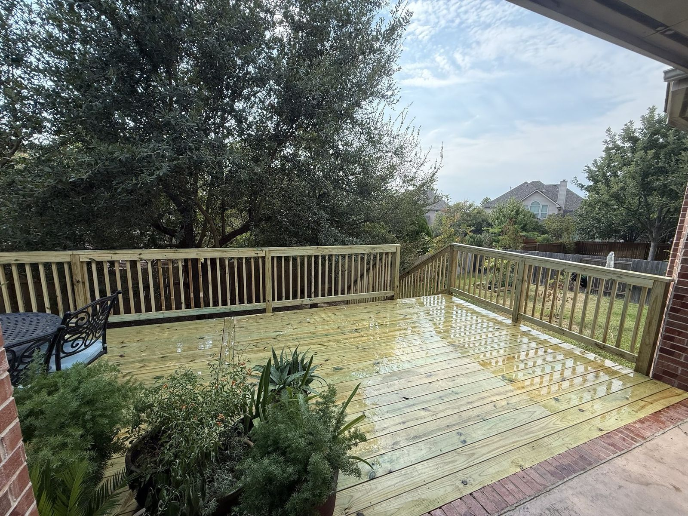
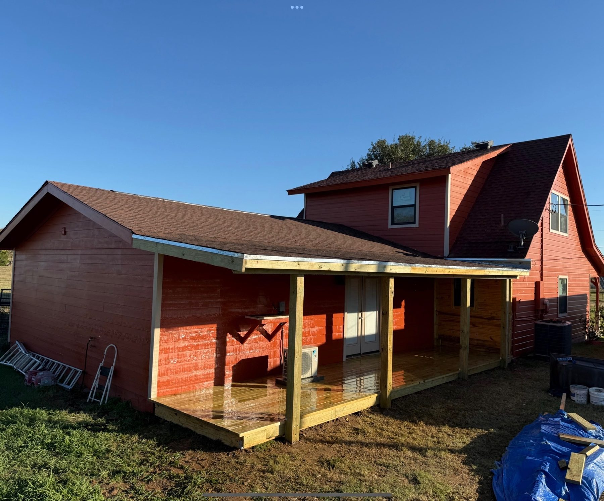
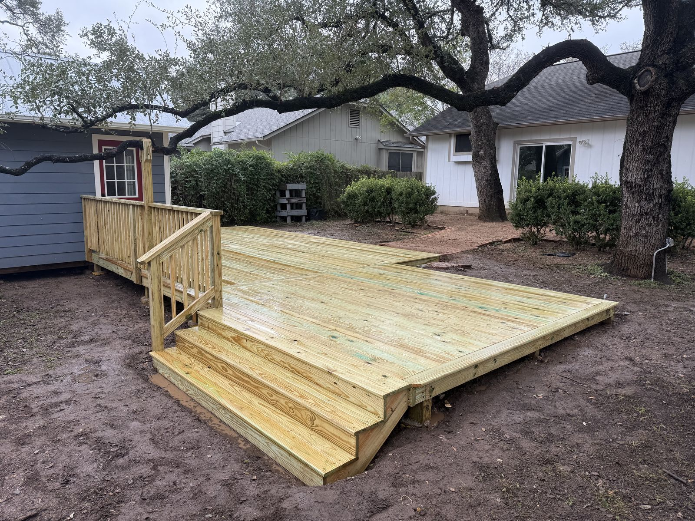

Most new decks in Austin need a building permit. The exceptions are narrow: a small, low deck that stands on its own away from the house. If your deck will be attached to the house or sit more than 30 inches off the ground, plan on a permit.
Here is how to tell whether your deck needs one, what changes in the cities around Austin, how long permits add to the schedule, what happens if you skip one, and which deck repairs need a permit.
When a deck needs a permit in the City of Austin
In the City of Austin, a deck needs a building permit unless it meets every one of the city's conditions for exempt work. The city's list of work exempt from building permits allows a deck to be built without one only when it is:
- Small, under the size limit the city sets for exempt decks.
- Low, no more than 30 inches above grade at any point.
- Detached, not attached to the house or townhouse.
- Not your exit, meaning it does not serve as the way out of the house.
- Out of the flood hazard area, since a permit can still be required in a floodplain.
Miss any one of those and the deck needs a permit. In practice, that covers most decks people want: anything off the back door, anything on a sloped lot, and anything big enough for a dining table and a grill. The city's work exempt from building permits page lists the exact limits.
Even an exempt deck still has to follow the building code and other city rules. Exempt means no permit, not no rules.

Why attached and raised decks almost always need one
Attached and raised decks need a permit because they are where deck failures do the most harm. A deck attached to the house hangs on a ledger board fastened to the house framing, and that connection has to be flashed and fastened correctly so water stays out of the wall and the deck stays on. A raised deck needs footings, posts and beams sized for the height, and any deck more than 30 inches above grade needs a code guardrail.
The permit and inspections are how the city checks that work. They also protect you later, which matters more than most people expect.
Permits in the cities around Austin
Each city around Austin sets its own deck permit rules, and areas outside city limits follow county rules. Round Rock, Cedar Park, Buda, Kyle, Leander, Georgetown and Pflugerville all have their own building departments. Homes in unincorporated Travis or Hays County deal with the county instead, which can have its own rules on things like impervious cover.
The safest assumption is the same everywhere: if the deck is attached or raised, it probably needs a permit. We check which rules apply to your address before we design anything, and we pull the permit with the right city or county as part of the job. Our local pages cover the details for Round Rock, Cedar Park and Buda.
How long a deck permit adds to the schedule
Permits usually add 1 to 4 weeks before the build can start, depending on the city or county and how busy its review is. The build itself takes 5 to 10 working days for most backyard decks once the crew starts, and 2 to 3 weeks for larger or multi-level decks.
If you have an HOA, its architectural review usually runs alongside or ahead of the permit. Most Austin-area HOAs approve decks in 14 to 30 days, and a complete packet speeds it up. Our HOA approval guide explains how that works.

What happens if you build a deck without a permit
An unpermitted deck usually catches up with you when you sell. A buyer's inspector will notice a deck with no permit history, and that can kill the sale or turn into a price negotiation at the worst possible moment. If the framing is not to code, fixing it then costs more than building it right would have.
It can also come up sooner, through a neighbor complaint, an HOA review or an insurance claim. And if the deck was never inspected, nobody checked the ledger, the footings or the railing, which are the parts that keep people safe. Our deck resale value guide covers what buyers and inspectors look for.
Not sure your deck needs a permit? Send a photo of the space and your address. John will tell you which rules apply and include the permit in a line-itemed quote, free.
Ask about my deckDo deck repairs need a permit?
Replacing worn deck boards usually does not need a permit, but structural repairs often do. The City of Austin exempts a non-structural repair limited to the existing deck boards, as long as it does not include the guardrails or handrails.
Rebuilding the frame, replacing posts or beams, enlarging the deck, or replacing the railings can need a permit, especially on attached decks and decks more than 30 inches above grade. Our deck repair cost guide explains how to tell a repair from a rebuild.

Other Austin rules that shape a deck
- Protected trees. Austin protects larger trees, and digging footings inside the root zone of one can require review before work starts. The usual answer is shifting the footings or cantilevering the framing past the roots.
- Impervious cover. Austin zoning limits how much of a lot can be covered by hard surfaces, and how a deck counts depends on how it is built. If your lot is near its limit, the deck design matters.
- Drainage. A deck should not block the path water already takes across the yard, or the ground under it stays wet and the framing suffers.
Our Austin deck page covers each of these in more detail.
What the permit costs you
The permit is a small part of a deck's cost. Installed decks in Austin run $30 to $45 per sq ft in pressure-treated pine, $50 to $75 in cedar and $60 to $100 in composite or PVC, so a typical 300 sq ft deck runs $9,000 to $13,500 in pine. We include the permit and the drawings it needs as a line on every quote, so you can see it rather than discover it later. Our Austin deck cost guide covers the full price.
Questions to ask any deck builder about permits
- Who pulls the permit? The builder should. If a contractor asks you to pull it yourself, you take on responsibility for the work.
- Is the permit on the quote? It should be its own line, so you can compare quotes fairly.
- Will you wait for the permit before starting? A builder who offers to start before it is issued is offering to skip a step that protects you.
- Who handles the HOA packet? If you have an HOA, its approval is separate from the city permit and needs its own submission.
- Can I see the permit before work starts? Any builder who pulled one will be glad to show it to you.
Ask the same questions of every builder you are comparing. The answers say a lot about how the rest of the job will go.
How we handle deck permits
We check which rules apply to your address, prepare the drawings, submit the permit and the HOA packet when there is one, and schedule the inspections. We do not start a permitted deck until the permit is issued. You get a deck with a clean permit history, which is worth having on the day you sell.
John walks every estimate himself and writes a line-itemed quote that shows the permit as its own line.
Deck permit questions, answered
Do I need a permit to build a deck in Austin?
Usually, yes. In the City of Austin, a deck can skip the permit only if it is small, no more than 30 inches above grade, not attached to the house, not used as the exit from the house, and not in a flood hazard area. Attached and raised decks need a permit.
Does a deck attached to the house need a permit?
In most cases, yes. An attached deck depends on its connection to the house framing, which has to be fastened and flashed correctly, so the city reviews and inspects it.
Do I need a permit for a ground-level deck?
Not always. A small deck no more than 30 inches above grade that is detached from the house and outside a flood hazard area can be exempt in the City of Austin. Check the city limits for your exact case, or ask us.
Do I need a permit to replace deck boards in Austin?
Usually not. The City of Austin exempts a non-structural repair limited to the existing deck boards, as long as it does not include the guardrails or handrails. Structural repairs and railing replacement can need a permit.
How long does a deck permit take in Austin?
Permits usually add 1 to 4 weeks before a build can start, depending on the city or county. HOA review, if you have one, usually takes 14 to 30 days and can run alongside it.
What happens if I build a deck without a permit?
It often shows up when you sell. A buyer's inspector can flag a deck with no permit history, which can stall the sale or lead to a price cut, and work that is not to code costs more to fix later.
Do Round Rock, Cedar Park and Buda have the same deck permit rules as Austin?
No. Each city sets its own rules, and homes outside city limits follow county rules. Attached and raised decks usually need a permit everywhere, and we check the rules for your address.
Does JB Contracting ATX pull the deck permit?
Yes. JB Contracting ATX checks which rules apply to your address, prepares the drawings, pulls the permit, handles the HOA packet and schedules the inspections as part of the job.
Sources
- Work exempt from building permits, City of Austin Development Services: the conditions for a deck to be exempt from a building permit, the exemption for non-structural deck board repairs, and that exempt work must still follow the code.
Prices on this page come from our own 2026 Austin-area quotes. Rules change, so we check which ones apply to your address before every build. New to a term? See our plain-English glossary.